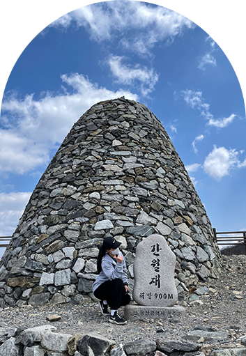

My
Favorite
●
Healing자연과 사진찍는 것을 좋아하는 저는
여행을 가면 풍경 사진을 남기곤합니다.
잔잔하게 파도치는 바다를 보며 마음의
안정을 느끼며 노을진 하늘을 보며 하루를
마무리하고 재정비하는 시간을 갖습니다.
소소한 시간들 하나하나 뜻깊고 순간순간을
기록하고 담는 것을 좋아합니다.
●
Hobby
운동을 좋아하고 즐기는 저는 주기적으로 등산을 합니다. 산이 좋아 오르기도 하지만 스트레스를 풀기 위한 저만의 스트레스
해소법입니다.
등산을 하며 느끼는 많은
과정은 복잡했던 생각을 정리하고 몸과
마음을 더욱 단단하게 만들었습니다.
체력이 좋아짐을 몸소 느끼고 더욱 긍정적인 마음가짐으로 변화함으로 지치고 힘들때 회복하는 힘과 새로움을 받아들이고
도전할 수 있는 용기를 얻었습니다.
